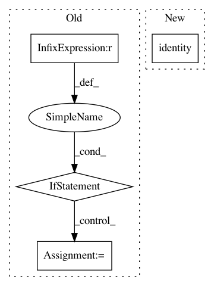

4479113488fb94b72b9aa6bb23b611b57635ff25,src/symbols/fresnet.py,,resnet,#Any#Any#Any#Any#Any#,487
Before Change
body = Act(data=body, act_type=act_type, name="relu0")
for i in range(num_stages):
if version_input==0:
body = residual_unit(body, filter_list[i+1], (1 if i==0 else 2, 1 if i==0 else 2), False,
name="stage%d_unit%d" % (i + 1, 1), bottle_neck=bottle_neck, **kwargs)
else:
body = residual_unit(body, filter_list[i+1], (2, 2), False,
name="stage%d_unit%d" % (i + 1, 1), bottle_neck=bottle_neck, **kwargs)
for j in range(units[i]-1):
body = residual_unit(body, filter_list[i+1], (1,1), True, name="stage%d_unit%d" % (i+1, j+2),
bottle_neck=bottle_neck, **kwargs)
After Change
data = mx.sym.Variable(name="data")
if version_input==0:
//data = mx.sym.BatchNorm(data=data, fix_gamma=True, eps=2e-5, momentum=bn_mom, name="bn_data")
data = mx.sym.identity(data=data, name="id")
data = data-127.5
data = data*0.0078125
body = Conv(data=data, num_filter=filter_list[0], kernel=(7, 7), stride=(2,2), pad=(3, 3),
no_bias=True, name="conv0", workspace=workspace)
In pattern: SUPERPATTERN
Frequency: 3
Non-data size: 4
Instances
Project Name: deepinsight/insightface
Commit Name: 4479113488fb94b72b9aa6bb23b611b57635ff25
Time: 2018-10-10
Author: guojia@gmail.com
File Name: src/symbols/fresnet.py
Class Name:
Method Name: resnet
Project Name: deepinsight/insightface
Commit Name: 429d0fd3608e4fac23721b2d3cbeee25e4462072
Time: 2018-10-10
Author: guojia@gmail.com
File Name: src/symbols/fresnet.py
Class Name:
Method Name: resnet
Project Name: geomstats/geomstats
Commit Name: 84f80cddc8f1e7ce8758ebc6e443f627f5e5b442
Time: 2018-07-24
Author: ninamio78@gmail.com
File Name: geomstats/special_orthogonal_group.py
Class Name: SpecialOrthogonalGroup
Method Name: __init__